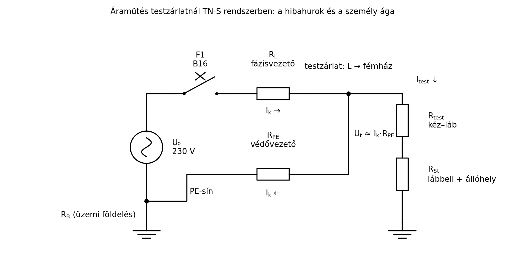

Statikus változat (mint a PDF-ben)
Villanyszerelőként gyakran dolgozol olyan közelben, ahol egy rossz mozdulat, egy hibás szigetelés vagy egy elmaradt feszültségmentesítés áramütéshez vezethet. Az áramütés nemcsak a sérültnek, hanem a segíteni akaró kollégának is életveszélyes, ha rossz sorrendben nyúl a helyzethez. Ebben az alfejezetben megtanulod, hogy mit okoz az emberi testben a villamos áram, miért éppen az áram és az idő együttese a döntő, és hogyan kell helyesen, biztonságosan elsősegélyt nyújtani áramütött személynek. Ez a tudás a munkahelyi biztonság és a emberi élet védelme miatt is kiemelt fontosságú.
Az áramütés legegyszerűbb esete a testzárlat: egy fémházas készülékben a fázisvezető szigetelése megsérül, és a fázis a fémházhoz ér. Az alábbi rajz ezt a hibát egy TN-S rendszerben mutatja. A hibaáram () a transzformátor tekercséből a kismegszakítón (F1) és a fázisvezetőn () át a fémházig, majd onnan a védővezetőn () vissza a csillagponthoz folyik. A fémházat megérintő ember ennek a huroknak csak egy párhuzamos ága: a kezén, a testén (), a lábbelijén és az állóhelyén () át a földbe, és a földön keresztül az üzemi földeléshez () záródik a kis áram.

A rajzból három fontos dolog olvasható ki:
PE nélkül nincs hibahurok: a fémházon a teljes fázisfeszültség, kb. 230 V jelenik meg, és a kismegszakító nem kap akkora áramot, hogy kioldjon – a testáram csak a személyen át folyik.
PE-vel a fázisvezető és a védővezető feszültségosztót alkot: a fémház és a PE-sín közötti érintési feszültség , ami azonos keresztmetszetű - és PE-vezetőnél a 230 V-nak legfeljebb kb. a fele, a hálózat saját impedanciája miatt inkább kevesebb. A nagy ráadásul gyorsan kioldja a kismegszakítót – ezt a hibavédelmi feltételt az Automatikus lekapcsolás: TN és TT, kioldási feltétel alfejezet számolja ki.
A lábbeli és az állóhely ellenállása () sorosan áll a test ellenállásával, ezért csökkenti a testáramot; a szigetelő talpú munkavédelmi cipő és a száraz állóhely ezért valódi védelem, a nedves beton vagy a fémpadló viszont elveszi ezt a tartalékot.
A testen átfolyó áramot az Ohm-törvény adja meg, a lábbeli és az állóhely ellenállásával együtt:
ahol (más jelöléssel ) a fémházon megjelenő érintési feszültség, az emberi test eredő ellenállása, a lábbeli és az állóhely ellenállása (mezítláb, nedves talajon közel 0).
Definíció. Az érintési feszültség az a feszültség, amely az érinthető vezetőképes részek és a föld (vagy egyidejűleg érinthető más vezetőképes rész) között jelenhet meg, és amely hatására a testen áram folyhat át.
Megjegyzés. A test ellenállása (pontosabban impedanciája) nem állandó: erősen függ az érintési feszültségtől, az érintkezési felülettől, a nedvességtől és az áramúttól. Kis feszültségen (néhány tíz volt) a száraz, ép bőr több kΩ-os, kis felületen akár több tíz kΩ-os ellenállást is adhat, de a bőr kb. 50–100 V fölött átüt, és a bőr alatti szövetek néhány száz ohmos ellenállása marad meghatározó. 230 V-on ezért a teljes testimpedancia jellemzően 1–2 kΩ nagyságrendű (ellenőrizendő: IEC 60479-1).
Tájékoztató értékek kéz–kéz áramútra, száraz bőrre, nagy érintkezési felületre, 50 Hz-en, a népesség 50 %-ára (ellenőrizendő: IEC 60479-1 aktuális táblázata):
| Érintési feszültség | 25 V | 50 V | 100 V | 230 V |
|---|---|---|---|---|
| Teljes testimpedancia | kb. 3250 Ω | kb. 2500 Ω | kb. 1725 Ω | kb. 1350 Ω |
Hiba. Ha valaki „száraz bőr, 100 kΩ” adattal számol 230 V-on, -t kap, és ártalmatlannak hiszi az áramütést. Ez hibás modell: 230 V-on a bőr átüt, a nagy bőrellenállás nem marad meg.
Összefüggés. Az emberi testen átfolyó áram hatása nem csupán az áram nagyságától függ, hanem az áramütés időtartamától, az áram útjától, a frekvenciától és a test egyéni adottságaitól is. A villamos biztonságban ezért az áram–idő tartományokat használjuk.
Szabály. A váltakozó áramú, 50 Hz-es áramütésnél a tipikus hatások nagyságrendje:
Ezek a számok irányszámok, a pontos élettani határokat az IEC 60479 jellegű műszaki dokumentumok és a hatályos szabványok tartalmazzák (ellenőrizendő: aktuális IEC 60479 kiadás).
Törvény. Az áramütéses kockázat szempontjából a döntő mennyiség nem önmagában a feszültség, hanem a testen átfolyó áram és az áramütés időtartamának együttese. Ezért használ a hibavédelem kioldási időket és áram-korlátozó eszközöket.
Az alábbi ábra a szívkamra-fibrilláció kezdetét jelző áram–idő határgörbét (az IEC 60479-1 c1 görbéjének közelítő pontjait: kb. 500 mA – 10 ms, 400 mA – 100 ms, 50 mA – 1 s, 40 mA – 5 s; ellenőrizendő: IEC 60479-1 / MSZ IEC 60479-1) és mellette a 30 mA-es áram-védőkapcsoló (FI-relé) legnagyobb megengedett kioldási idejeit mutatja: minél nagyobb az áram, annál rövidebb idő alatt válik életveszélyessé.
A grafikon jól mutatja: a 30 mA-es FI-relé kioldási pontjai (30 mA – 300 ms, 150 mA – 40 ms) mind a c1 görbe alatt maradnak, vagyis a relé előbb kapcsol le, mint ahogy az adott áram fibrillációt okozhatna. Kis áramnál (40–50 mA) már a néhány száz ms – 1 s-os áramütés is a veszélyes tartomány határán van, nagy áramnál (400–500 mA) a 10–100 ms is. A védekezésben ezért nem elég az áramot korlátozni, az időt is rövidre kell szabni.
A műszaki irodalom az áramütés hatásait zónákba sorolja. Az IEC 60479 szerint a leggyakrabban használt zónák a következők (a pontos görbéket és elnevezéseket a hatályos kiadás szerint ellenőrizni kell):
A fenti áram–idő ábrán ezek a zónák síkrészekként látszanak: az AC-1 az a görbétől (0,5 mA) balra, az AC-2 az a és a b görbe (hosszú időknél 10 mA) között, az AC-3 a b és a c1 között, az AC-4 a c1-től jobbra; a c2 és c3 görbe az AC-4-en belül a fibrilláció növekvő valószínűségét jelzi. Így látszik az is, miért függ a válasz az időtől: egy 40 mA-es áram rövid ideig az AC-3-ban, néhány másodpercig már az AC-4 határán van. A HTML-kiadásban a síkra mutatva a lap kiírja a pont zónáját és a várható hatást.
Továbbvitt eredmény. A c1 görbéből adódik az 50 V-os tartós érintési feszültséghatár és a végáramkörök 0,4 s-os lekapcsolási ideje (lásd Alapvédelem, hibavédelem, kiegészítő védelem és Automatikus lekapcsolás: TN és TT, kioldási feltétel). Ez az áram–idő szemlélet adja az alapot a Villamos munkavégzés biztonsága: az öt szabály és a munkaengedély és az Alapvédelem, hibavédelem, kiegészítő védelem alfejezetek kioldási időihez és a 30 mA-es áram-védőkapcsoló (FI-relé) alkalmazásához. A FI-relé azért fontos, mert a hibaáramot gyorsan lekapcsolja, így az áramütés időtartama a fibrillációs határhoz tartozó idő alatt marad. A testáram nagyságát a készülék nem csökkenti, azt az érintési feszültség és a testellenállás határozza meg. Ez nem jelent teljes védelmet, de a kockázatot erősen csökkenti.
Áramút. A fenti zónák és a c1 görbe a bal kéz → lábak áramútra, 50 Hz-es váltakozó áramra vonatkoznak. Más útnál a szíven az áram más hányada halad át. Ezt a szíváram-tényező () fejezi ki.
Összefüggés. Egy áram a vizsgált úton ugyanolyan fibrillációs veszélyt jelent, mint a bal kéz–láb úton, azaz (ellenőrizendő: IEC 60479-1).
| Áramút | (tájékoztató, ellenőrizendő: IEC 60479-1) |
|---|---|
| bal kéz – lábak (vonatkoztatási út) | 1,0 |
| jobb kéz – lábak | 0,8 |
| kéz – kéz | 0,4 |
| mellkas – bal kéz | 1,5 |
| hát – bal kéz | 0,7 |
Számítás. Kéz–kéz úton 225 mA ugyanolyan fibrillációs veszélyt jelent, mint a bal kéz–láb úton (ellenőrizendő). Figyelem. A kéz–kéz út kisebb tényezője nem biztonság: a 90 mA-es egyenértékű áram is veszélyes, és a mellkason átmenő utak a legveszélyesebbek.
Egyenáram. Azonos áramerősségnél az egyenáram fibrillációs veszélye kisebb, mint az 50 Hz-es váltakozó áramé, de ettől még életveszélyes: a be- és kikapcsolás pillanata erős izomrángást okoz, hosszabb ideig égési és elektrolitikus károsodás léphet fel, az egyenáramú ív pedig nehezen alszik ki (lásd Napelemes rendszerek és háztartási méretű kiserőmű). Átszámító tényezőt csak a szabvány alapján használj (ellenőrizendő: IEC 60479-1).
Frekvencia. Az 50–60 Hz a fibrilláció szempontjából a legveszélyesebb tartományba esik. Nagyobb frekvencián (például frekvenciaváltó kimenetén) a fibrillációs küszöb nő, de az égési hatás megmarad, és a kimeneti feszültség tartalmazhat nagy meredekségű impulzusokat is – a frekvenciaváltós hajtás sem „kevésbé veszélyes” (ellenőrizendő: IEC 60479-2).
Szabvány. A kisfeszültségű villamos berendezések hibavédelmére vonatkozó MSZ HD 60364-4-41 (vagy annak aktuális kiadása) írja elő az érintési feszültség határértékeit és a védőeszközök kioldási időit. Az élettani határokat az IEC 60479 tartalmazza. A gyakorlatban ezeket az értékeket a mindenkori hatályos szabvány és a nemzeti előírások szerint kell ellenőrizni.
Megjegyzés. A tartós érintési feszültség határértéke Magyarországon a kisfeszültségű hálózatokon jellemzően 50 V váltakozó feszültség, nedves vagy építési környezetben ennél alacsonyabb, például 25 V váltakozó feszültség lehet (ellenőrizendő: aktuális MSZ HD 60364-4-41 és a vonatkozó magyar előírások). A törpefeszültségű, védőelválasztott rendszerek (SELV/PELV) célja éppen az, hogy a feszültség olyan alacsony maradjon, hogy még közvetlen érintés esetén se alakuljon ki veszélyes testáram.
Esettanulmány: hajszárító a fürdőszobában
Egy lakásban a fürdőszobai aljzatkörön nem volt áram-védőkapcsoló, a régi hajszárító vezetékének szigetelése pedig a ház bevezetésénél megsérült. A használó nedves kézzel a sérült vezetékrészt fogta meg, és a hajszárító vízcseppes környezetben testzárlatossá vált. A testen átfolyó áram a 230 V és a nedves bőr miatt 200 mA feletti értékűre is emelkedhetett. A sérült a hajszárítót nem tudta elengedni, mert az izmai görcsbe rándultak. A családtag szerencsére nem érintette meg puszta kézzel, hanem először a fürdőszobai áramkör kismegszakítóját kapcsolta le, majd mentőt hívott. A sérült eszméletlen volt, légzése rendszertelen, ezért a mentő érkezéséig a 112 diszpécser utasításai alapján mellkasi nyomásokat kezdtek. A helyszínre érkező mentők AED-et alkalmaztak, és a sérültet kórházba szállították.
Tanulságok:
Gyakorlás: ennek az alfejezetnek a kidolgozott példái, gyakorlatai és megoldással ellátott feladatai az Összefoglaló feladatgyűjtemény villanyszerelő tanulóknak című kötet 2.3 szakaszában találhatók.
Az áramütés veszélyét a testen átfolyó áram és az áramütés időtartama együtt határozza meg. A testimpedancia a feszültségtől, a nedvességtől, az érintkezési felülettől és az áramúttól függ: kis feszültségen a száraz bőr több kΩ–több tíz kΩ is lehet, 230 V-on viszont a bőr átüt, a teljes testimpedancia 1–2 kΩ nagyságrendű (ellenőrizendő: IEC 60479-1), így száraz kézzel is száz milliamper feletti áram folyhat. A tipikus hatástartományok: 0,5 mA érzékelés, 5–10 mA elengedési nehézség, 20–30 mA légzési problémák, 50 mA felett szívkamra-fibrilláció. Az IEC 60479 és az MSZ HD 60364-4-41 szerinti áram–idő zónák és érintési feszültség határértékek indokolják a hibavédelmi kioldási időket és a 30 mA-es FI-relék alkalmazását (ellenőrizendő: aktuális szabványkiadások). Az elsősegély sorrendje: saját biztonság, feszültségmentesítés, állapotfelmérés (eszméletlen, de normálisan lélegző sérültnél stabil oldalfekvés), 112 hívás (segítő jelenlétében ő már a feszültségmentesítés után hív), szükség esetén BLS, AED, égési sérülések ellátása, dokumentálás. Továbbvitt eredmény: az áram–idő határok alapozzák meg a Villamos munkavégzés biztonsága: az öt szabály és a munkaengedély és az Alapvédelem, hibavédelem, kiegészítő védelem alfejezetekben tárgyalt kioldási időket és védelmi filozófiát.